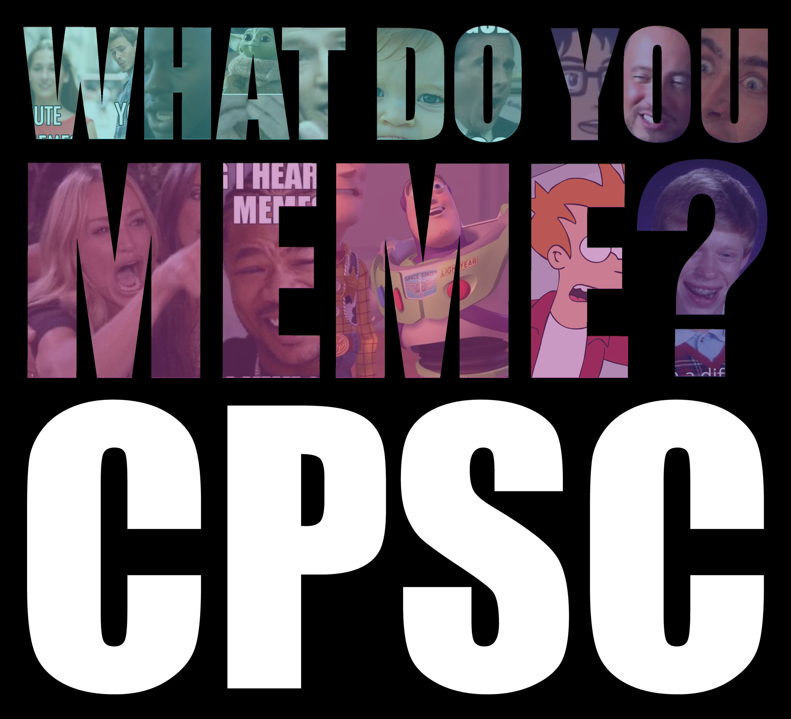

<mat-sidenav-container>
  <mat-sidenav mode="side" opened></mat-sidenav>
  <mat-sidenav position="end" mode="side" opened>
  </mat-sidenav>
  <section class="mat-typography">
    <p id="header">
      <mat-toolbar>
        
        <span id="app-name">What Do You Meme?</span> <span class="subscript-text">CPSC</span>
        <span id="header-filler"></span>
        <mat-expansion-panel (opened)="hideChat = false" (closed)="hideChat = true"
          [ngClass]="{'expension-panel-align-opened': !hideChat}">
          <mat-expansion-panel-header>
            <mat-panel-title>
              Chat
            </mat-panel-title>
          </mat-expansion-panel-header>
          <chat-root [hideUsers]="hideUsers" [hideChat]="hideChat"></chat-root>
        </mat-expansion-panel>
      </mat-toolbar>
    </p>
  </section>
</mat-sidenav-container>

<router-outlet></router-outlet>